A bidirectional sign-language translation wearable built around an edge AI server, a Raspberry Pi-based glasses prototype, and two different inference paths: sign-to-text and speech-to-sign.
I worked on the AI pipeline direction, the device/server system structure, and the wearable-side implementation. This page is a technical summary from my side of the project.
FocusAI pipeline, system architecture, wearable integration
Core stackMediaPipe, Transformer, Wav2Vec2, Flask-SocketIO, Raspberry Pi Zero 2 W
DataWLASL for sign-to-text, How2Sign for sentence-level sign generation
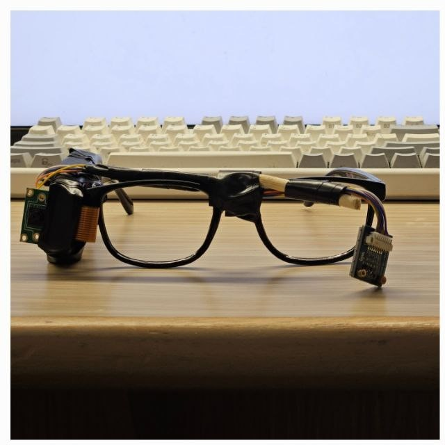
Final wearable prototype. Click to expand.
This project was not only about making a model work offline. Once the system became wearable, representation, transport, inference placement, and output format all started to matter as much as raw accuracy.
01 · Scope
What I focused on
I treated the work as one system. The model, the server, the device, and the physical form factor had to agree with each other.
AI pipeline direction
I worked on how the AI should be represented and placed inside the product: what stays on device, what moves to the edge server, how the two translation paths should be split, and how to evaluate model behavior separately from capture noise.
System architecture
I pushed the project toward an edge AI structure instead of a device-only demo. That meant thinking about latency budgets, transport cost, API boundaries, and what kind of outputs the wearable could actually display well.
Wearable implementation
I built the wearable side from schematic to prototype to final assembly: hardware planning, Raspberry Pi integration, camera/display/microphone handling, application logic, and unit tests.
System-level debugging
Much of the real work happened in the boundary cases: camera reflections, off-center signing, speech noise, packet timing, and the simple fact that a small wearable device changes what an AI pipeline can realistically do.
02 · Architecture
System structure
The system was split so the wearable handled capture and output, while the edge server handled the heavier inference and data processing.
Wearable device
IMX219 camera
USB microphone
GC9107 display
Raspberry Pi Zero 2 W
→
Edge server
MediaPipe preprocessing
Sign-to-text classifier
Speech-to-text + text-to-sign
API / WebSocket layer
→
Returned output
Text on HUD
Generated sign animation
Timing and diagnostic data
The Pi handled I/O and communication. The GPU-backed server handled the inference path that the wearable could not carry alone.
Sign-to-text path
This path was treated as sequence classification.
camera capture
→ upload / stream to edge server
→ MediaPipe pose + face + hand keypoints
→ normalized sequence windows
→ Transformer classifier
→ word prediction
→ text returned to wearable display
Speech-to-sign path
This path was treated as sentence-to-motion generation.
microphone capture
→ speech-to-text (Wav2Vec2)
→ sentence tokens
→ text-to-sign Transformer
→ BFH keypoint sequence
→ skeletal rendering / animation
→ result returned to device
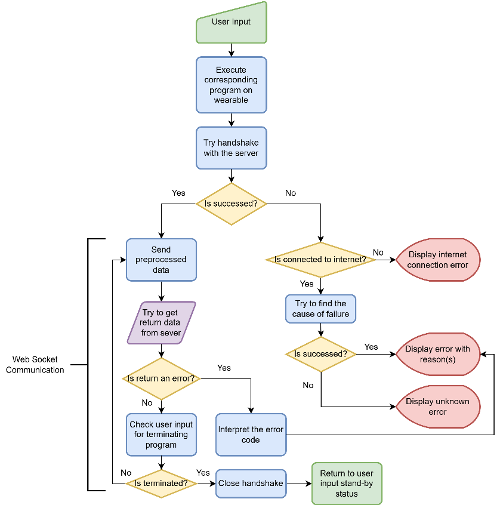
Wearable communication flow.
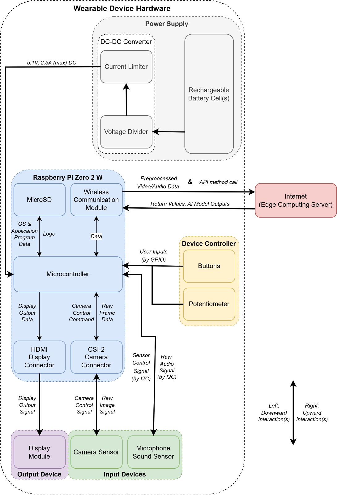
System diagram from the project report.
03 · Decisions
Design choices that shaped the AI system
Most of the important decisions were not about one model in isolation. They were about how the AI should survive inside the whole system.
Decision 01
Use structured keypoints before classification
I did not want the wearable to depend on pushing raw visual complexity all the way through the stack. A keypoint representation made the sign path easier to normalize, easier to window as a sequence, and more realistic for an edge-server setup.
Decision 02
Split recognition and generation into different AI paths
Sign-to-text and speech-to-sign are not the same problem. One is classification over gesture sequences. The other is sentence-conditioned motion generation. Treating them separately gave the project a cleaner structure and better dataset fit.
Decision 03
Keep heavy inference on the edge server
The Raspberry Pi Zero 2 W was good enough for capture, display, and transport, but not for the full inference load. Moving the models to the edge server kept the device simple and made the pipeline easier to iterate.
Decision 04
Favor sequence models that scale with temporal context
The system had to deal with time, not just frames. I pushed the architecture toward Transformer-style sequence modeling because the project needed temporal reasoning, larger vocabularies, and a cleaner way to handle sequential dependencies.
Decision 05
Use different datasets for the two tasks
WLASL fit isolated word recognition for sign-to-text. How2Sign fit sentence-level generation for speech-to-sign. That split matched the actual structure of the tasks better than forcing one dataset or one model family to do everything.
Decision 06
Separate capture quality from model quality during evaluation
Live signing mixed together too many variables: camera quality, signer skill, reflections, framing, and model behavior. Using controlled MP4 inputs gave a clearer read on what the classifier was doing and where the real bottlenecks were.
Decision 07
Keep the sign-to-text output explicit
I preferred a direct word-level output path in the demo rather than hiding model mistakes behind an extra language layer. It made the system easier to debug and kept latency from growing even further.
Decision 08
Change the hardware when the AI path demanded it
The device was adjusted around the pipeline. I reduced the display size for a cleaner wearable form, and I moved to a better microphone path because the speech side of the system was only as good as the input audio.
04 · Implementation
What was implemented
The final system combined AI inference, transport, embedded software, and a wearable hardware prototype.
AI stack
Sign-to-text built around MediaPipe keypoints and a Transformer classifier
Speech-to-sign built as speech-to-text + text-to-sign + skeletal rendering
Sentence-level sign generation based on BFH keypoint sequences
Separate data flow for recognition and generation
Wearable stack
Raspberry Pi Zero 2 W as the device computer
IMX219 camera for sign capture
GC9107 HUD display for text output
USB microphone path for speech input
Communication layer
Wi-Fi connection between wearable and server
REST endpoints and WebSocket for ongoing exchange
Server-side handling for video, audio, inference, and return payloads
Timing logs used to separate transport delays from inference delays
Embedded application
Raspberry Pi OS setup and peripheral integration
Display, camera, and microphone control in the device app
Packet simulation and unit tests before full server dependency
Final assembly into a glasses-based prototype
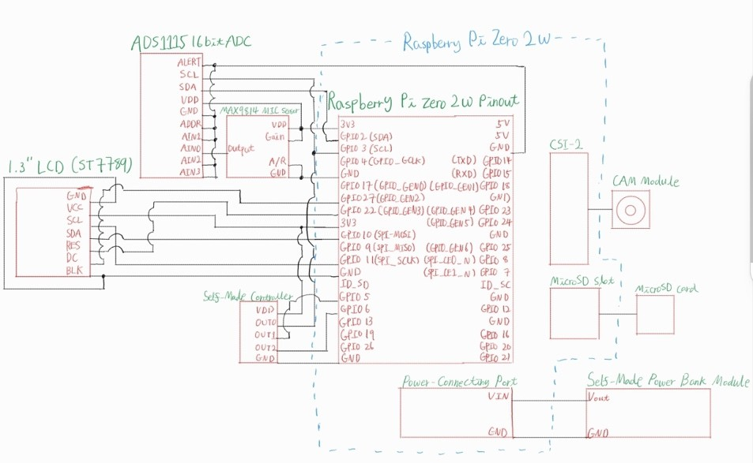
Hand-drawn schematic used as the hardware baseline.
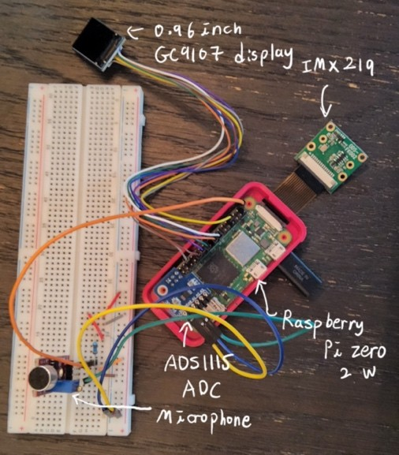
Prototype stage before final assembly.
The hardware work and the AI work were tightly coupled. Device size, capture quality, power, and display constraints kept feeding back into model and pipeline choices.
05 · Results
What worked and what did not
The project met the accuracy target. It did not meet the original latency target. That difference shaped most of the final trade-offs.
Item
Target
Observed result
Reading
Sign-to-text accuracy
≥ 80%
86%
Target met
Speech-to-sign accuracy
≥ 80%
83%
Target met
Sign-to-text latency
≤ 1 second
~2580 ms server-side processing
Target missed
Speech-to-sign latency
≤ 1 second
~3212 ms
Target missed
Vocabulary scale
Large enough for practical demo
2,000-word sign-to-text setting
Achieved
What the numbers showed
The AI paths were usable enough to demonstrate the concept. The bigger problem was the end-to-end path: capture quality, server round-trip, and generation time still pulled the system away from true real-time use.
Failure modes that mattered
Live capture suffered from framing issues, reflections, and inconsistent signing. Audio degraded in noisy conditions. The Pi-side code remained stable, but the full pipeline was still constrained by transport and inference cost.
What was still important
Even with those limits, the project proved that a small wearable device can be used as the front end of an AI communication system. The prototype was not only a model demo; it was a working device-server loop.
Why I kept the trade-offs visible
I preferred to show the real constraints instead of polishing the page into a success story. The interesting part of this project was the system boundary, not only the best-case metric.
Wearable-side timing snapshot.
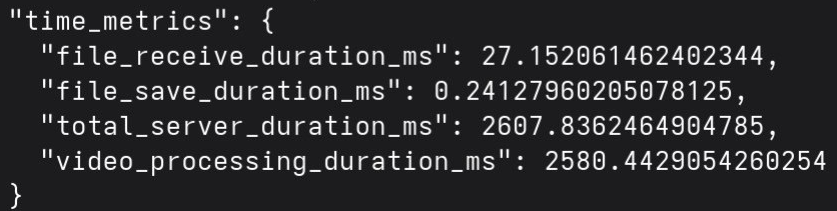
Server-side timing snapshot.
06 · Gallery
Build and test artifacts
These are the materials that show the project as a physical system, not just a model diagram. All images open full size.
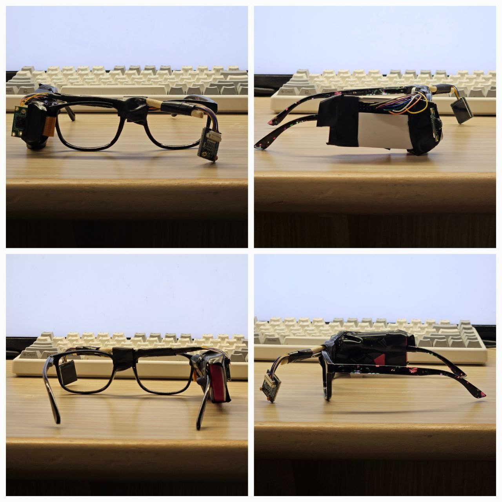
Final build from multiple angles.
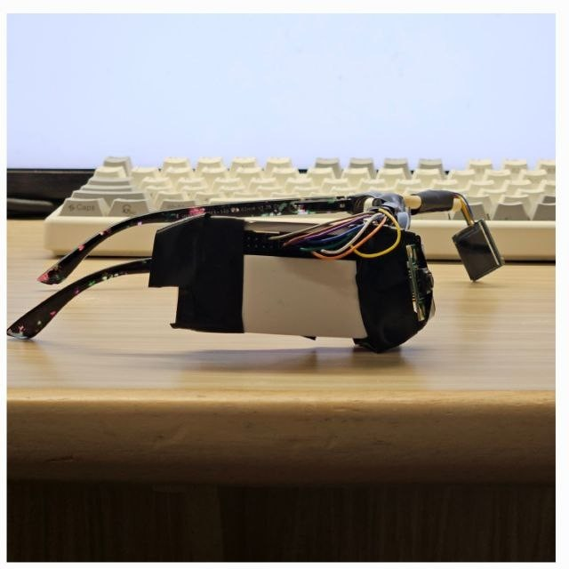
Side view of the final build.
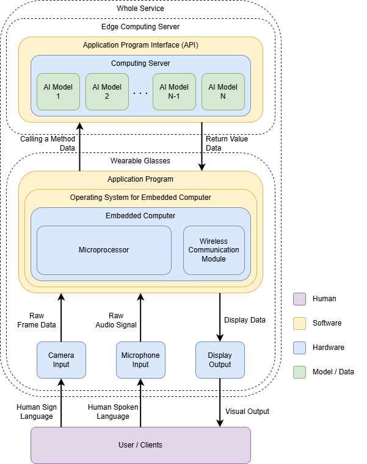
Hardware overview diagram.
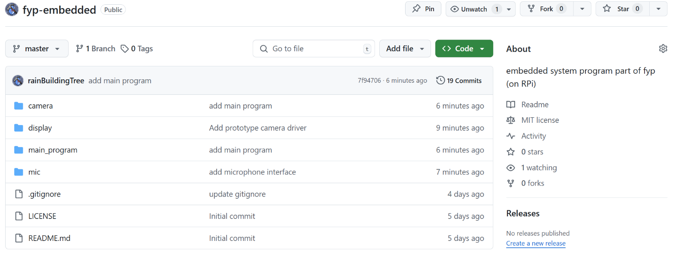
Repository and version-control snapshot.
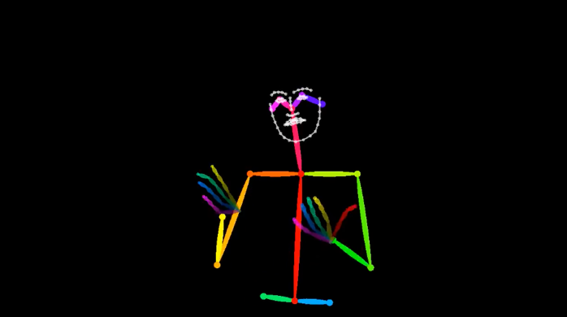
Sign animation output.Detailed system block diagram.
07 · Notes
What I would change next
If I continue this project, the next work is mostly about making the AI system more reliable under real capture conditions.
Better capture quality
A higher-quality camera and tighter calibration would reduce the amount of error that currently gets blamed on the model.
More robust audio front end
The speech path needs better noise handling and sentence-boundary control before the generated sign output becomes dependable in real environments.
Latency-focused restructuring
I would keep pushing preprocessing closer to the device, reduce transport cost, and revisit which parts of the inference path can be simplified without losing the structure of the task.
More fluent language layer
Once the core capture and inference path is stable, a higher-level language layer can be added more safely. I would not hide that behind a polished demo before the low-level path is trustworthy.